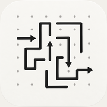
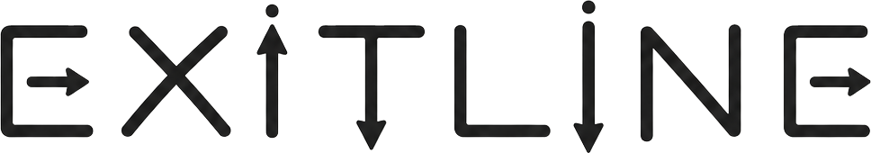

Find the order. Clear the shape.
ExitLine is a single-player puzzle game. Every level is a silhouette drawn out of arrow lines; you tap the lines in the order that lets each one leave the board.
Questions, bug reports, refund or purchase problems — write to us and we answer within a few business days.
When reporting a problem, please include your device model, iOS version and the level number.
Open Settings in the game (gear icon, top right) and tap Restore Purchases. Make sure you are signed in with the Apple ID used for the purchase. Remove Ads is a one-time, non-consumable purchase — it never expires and it is not a subscription.
The app keeps a cloud copy of your save, but under an anonymous identifier that is created fresh on every install — so after a reinstall there is nothing we can match it to. To protect against that, Settings offers Save Progress with Apple: it ties your save to your Apple ID — no separate account, nothing else changes. Reinstall, tap the same option, and your progress comes back. Without it, we have no way to identify which save was yours.
Levels play fully offline. A connection is used to load ads, to complete a purchase, and to keep your game save backed up. Linking that backup to your Apple ID is optional and only happens if you tap Save Progress with Apple.
Use the hint button in the game bar: it finds a line that can leave right now, brings the camera to it and dims everything else. Hints are also available by watching a rewarded ad.
Yes. Every level ships with a verified solution; no level can reach a dead end that forces a restart.
Open Settings in the game and tap Delete My Data. This permanently erases your saved progress and any Apple ID link — on the device and in the cloud — immediately, with no need to contact us.
ExitLine tek kişilik bir bulmaca oyunudur. Oynamak için hesap açmanıza gerek yoktur.
Reklamlar devam ediyorsa: “Remove Ads” satın aldıysanız oyun içi Settings › Restore Purchases adımını kullanın; satın alımı yaptığınız Apple ID ile giriş yapmış olduğunuzdan emin olun.
İlerlemem kayboldu: Oyun kaydınız bulutta da tutulur, ama anonim bir kimlikle — ve o kimlik her yeni kurulumda sıfırdan oluştuğu için eski kaydınızı sizinle eşleştiremeyiz. Bunu önlemek için Ayarlar’daki Save Progress with Apple seçeneğini kullanın; ilerlemeniz Apple ID’nize bağlanır ve yeniden kurulumda geri gelir.
Bir bölümde takıldım: Oyun çubuğundaki ipucu düğmesi, şu anda çıkabilecek bir çizgiyi bulur ve kamerayı oraya götürür. İpuçları ödüllü reklam izleyerek de alınabilir.
Verilerimi silmek istiyorum: Ayarlar’daki Delete My Data seçeneği ilerlemenizi ve Apple ID bağlantınızı kalıcı olarak siler — bize yazmanıza gerek yok.
İletişim: dursunaras@gmail.com · Gizlilik Politikası